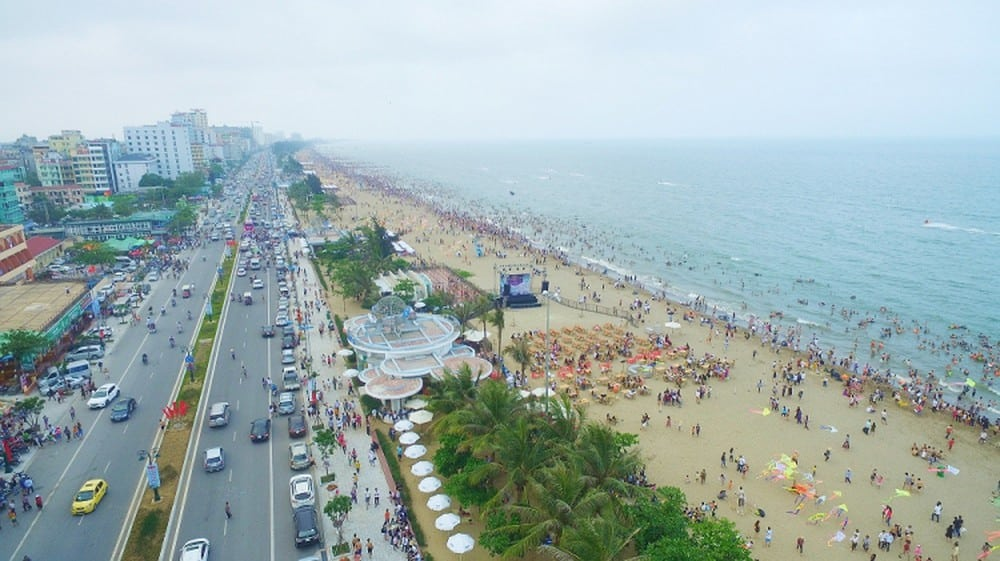
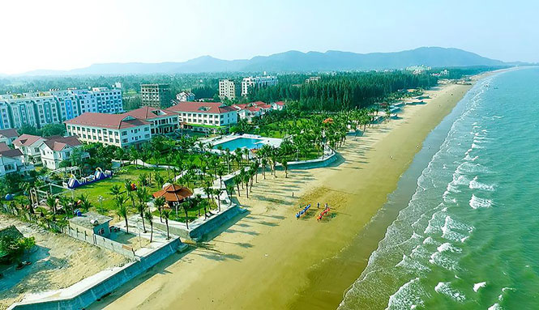
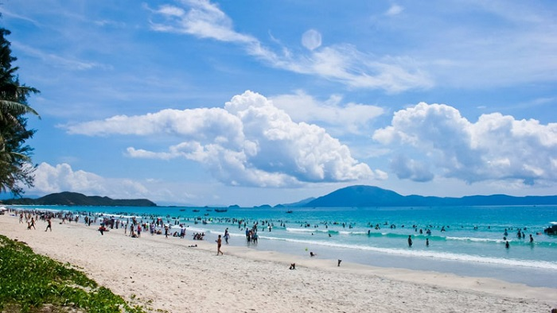

3 bãi biển Thanh Hóa cực đẹp không - nên - bỏ - lỡ
Bãi biển Sầm Sơn
Bãi biển Sầm Sơn chắc chắn là bãi biển được gọi đến tên đầu tiên khi nhắc đến những bãi biển Thanh Hóa. Đây cũng là một trong những bãi biển đầu tiên tại miền Bắc được đưa vào khai thác du lịch.
Biển Sầm Sơn xinh đẹp chạy dài 6km từ Lạch Hới tới chân núi Trường Lệ. Mỗi khi hè tới, Sầm Sơn lại thu hút hàng chục ngàn lượt du khách trong và ngoài nước tới nghỉ dưỡng, vui chơi, tắm biển và tận hưởng gió biển mát lạnh.
Biển Hải Tiến Thanh Hóa
Biển Hải Tiến Thanh Hóa với đường bờ biển dài 12km là bãi biển có đường bờ biển dài nhất miền Bắc nước ta, nằm cách thủ đô Hà Nội 165km và cách trung tâm thành phố Thanh Hóa chỉ 20km. Chắc hẳn, biển Hải Tiến đang còn là cái tên mới lạ trên bản đồ du lịch Thanh Hóa. Nhưng nếu có dịp đặt chân đến đây thì bạn sẽ không phải thất vọng đâu.
Biển trong, ánh nắng chan hòa, những ruộng muối dưới ánh nắng trở nên lung linh đến huyền ảo. Vẻ đẹp bình dị của nhịp sống, của nhịp lao động vẫn luôn hiện diện chứ chưa bị sự xô bồ của những dịch vụ du lịch tác động vào có lẽ chính là điểm thu hút của Hải Tiến. Nếu bạn tạm gác lại những bộn bề cuộc sống và “trốn” đến một nơi nào đó bình yên thì hãy đến với bãi biển Hải Tiến Thanh Hóa nhé.
Biển Hải Hòa Thanh Hóa
Biển Hải Hòa cách thành phố Thanh Hòa chừng 40 km và nằm ở thị trấn Còng, huyện Tĩnh Gia. Biển Hải Hòa không quá nổi tiếng với du khách trong nước như biển Sầm Sơn hay biển Hải Tiến mà được người dân địa phương ghé tới nhiều hơn.
Biển nơi đây hấp dẫn ở chỗ nó vẫn giữ được sự hoang sơ ở những triền cát mềm mịn trải dài, những rặng phi lao, những hoạt động của ngư dân. Một trong những khoảnh khắc đẹp và đáng trải nghiệm nhất nơi đây có lẽ là lúc bình minh vừa ló rạng, khi những triền cát trắng ánh lên rực rỡ dưới ánh ban mai, khi mặt trời ló dạng dần, khi xóm chài bắt đầu công cuộc mưu sinh với những buổi kéo lưới rôm rả nụ cười.